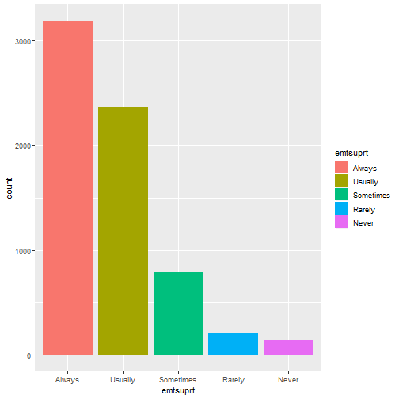
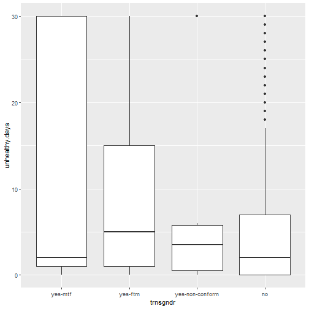

Case Study in Data Exploration and Hypothesis Testing
Adam J Sullivan
Assistant Professor of Biostatistics
Brown University
Case Study in Data Exploration and Hypothesis Testing
The Data
- We will begin working with data from the Behavioral Risk Factor Surveillance System 2014 data.
- We have a small segment of data that contains information on health and access to healthcare.
The data
load("Data/brfss.rda")
str(brfss2)
## 'data.frame': 6706 obs. of 16 variables:
## $ genhlth : Factor w/ 5 levels "Excellent","Very Good",..: 4 2 4 3 2 4 2 2 5 1 ...
## $ genhlth_bin : Factor w/ 2 levels "Excell/VG/G",..: 2 1 2 1 1 2 1 1 2 1 ...
## $ unhealthy.days: num 25 0 15 0 0 0 2 23 30 30 ...
## $ imprace : Factor w/ 6 levels "white-non-hisp",..: 1 1 1 1 1 5 5 1 1 1 ...
## $ insurance : Factor w/ 2 levels "Yes","No": 1 1 1 1 1 1 1 1 1 1 ...
## $ trnsgndr_bin : Factor w/ 2 levels "yes","no": 2 2 2 2 2 2 2 2 2 2 ...
## $ trnsgndr : Factor w/ 4 levels "yes-mtf","yes-ftm",..: 4 4 4 4 4 4 4 4 4 4 ...
## $ sxorient_bin : Factor w/ 2 levels "heterosexual",..: 1 1 1 1 1 1 1 1 1 1 ...
## $ sxorient : Factor w/ 4 levels "heterosexual",..: 1 1 1 1 1 1 1 1 1 1 ...
## $ menthlth : num 10 2 15 5 2 30 0 4 15 2 ...
## $ poorhlth : num 25 0 15 0 0 15 0 5 NA 0 ...
## $ lsatisfy : Factor w/ 4 levels "Very Satisfied",..: 2 1 3 2 1 4 1 2 2 2 ...
## $ lsatisfy_bin : Factor w/ 2 levels "Satisfied","Disatisfied": 1 1 2 1 1 2 1 1 1 1 ...
## $ emtsuprt : Factor w/ 5 levels "Always","Usually",..: 3 2 1 2 1 3 1 2 5 2 ...
## $ emtsuprt_bin : Factor w/ 2 levels "Always/Usually",..: 2 1 1 1 1 2 1 1 2 1 ...
## $ medcost : Factor w/ 2 levels "Yes","No": 2 2 2 2 2 2 2 2 2 2 ...
Codebook
General Health
genhlth: Would you say your general health is?- Excellent
- Very Good
- Good
- Fair
- Poor
Plot

General Health Binary
genhlth_bin: Would you say your general health is?- Excellent/Very Good/Good
- Fair/Poor
Plot

Unhealthy Days
unhealthy.days: Now thinking about your physical health, which includes physical illness and injury, for how many days during the past 30 days was your physical health not good?- Values: 0-30
Plot

Mental Health Days
menthlth: : Now thinking about your mental health, which includes stress, depression, and problems with emotions, for how many days during the past 30 days was your mental health not good?- Values: 0-30
Plot
Poor Physical or Mental Health
poorhlth: During the past 30 days, for about how many days did poor physical or mental health keep you from doing your usual activities, such as self-care, work, or recreation?- Values: 0-30
Plot
Imputed Race
imprace: Imputed race/ethnicity value (This value is the reported race/ethnicity or an imputed race/ethnicity, if the respondent refused to give a race/ethnicity. The value of the imputed race/ethnicity will be the most common race/ethnicity response for that region of the state)- White, Non-Hispanic
- Black, Non-Hispanic
- Asian, Non-Hispanic
- American Indian/Alaska Native, Non-Hispanic
- Hispanic
- Other Race, Non-Hispanic
Plot
Insurance
insurance: Do you have any kind of health care coverage, including health insurance, prepaid plans such as HMOs, or government plans such as Medicare, or Indian Health Service?- Yes
- No
Plot

Gender
trnsgndr: Do you consider yourself to be transgender? (If yes, ask “Do you consider yourself to be male-to-female, female-to-male, or gender non-conforming?)- Yes, mtf
- Yes, ftm
- Yes, non-conforming
- No
Plot
Gender Binary
trnsgndr_bin: Do you consider yourself to be transgender? (If yes, ask “Do you consider yourself to be male-to-female, female-to-male, or gender non-conforming?)- Yes
- No
Plot

Sexual Orientation
sxorient: Do you consider yourself to be: (We ask this question in order to better understand the health and health care needs of people with different sexual orientations.)- Heterosexual
- Homosexual
- Bisexual
- Other
Plot

Sexual Orientation Binary
sxorient_bin: Do you consider yourself to be: (We ask this question in order to better understand the health and health care needs of people with different sexual orientations.)- Heterosexual
- Other
Plot

Life Satisfaction
lsatisfy: In general, how satisfied are you with life?- Very Satisfied
- Satisfied
- Disatisfied
- Very Disatisfied
Plot
Life Satisfaction Binary
lsatisfy: In general, how satisfied are you with life?- Satisfied
- Disatisfied
Plot

Emotional Support
emtsuprt: How often do you get the social and emotional support you need?- Always
- Usually
- Sometimes
- Rarely
- Never
Plot

Emotional Support Binary
emtsuprt_bin: How often do you get the social and emotional support you need?- Always/Usually
- Sometimes/Rarely/Never
Plot
Medical Cost Barrier
medcost: Was there a time in the past 12 months when you needed to see a doctor but could not because of cost?- Yes
- No
Plot
Relationships
Unhealthy Days vs Insurance
## # A tibble: 2 x 4
## insurance mean median sd
## <fct> <dbl> <dbl> <dbl>
## 1 Yes 6.43 2 9.63
## 2 No 5.95 2 9.20

Unhealthy Days vs Medical Cost
## # A tibble: 2 x 4
## medcost mean median sd
## <fct> <dbl> <dbl> <dbl>
## 1 Yes 8.90 3 10.8
## 2 No 6.09 2 9.40

Unhealthy Days vs Emotional Support
## # A tibble: 2 x 4
## emtsuprt_bin mean median sd
## <fct> <dbl> <dbl> <dbl>
## 1 Always/Usually 6.08 2 9.35
## 2 Sometimes-Never 7.98 2 10.6
Unhealthy Days vs Gender
## # A tibble: 4 x 4
## trnsgndr mean median sd
## <fct> <dbl> <dbl> <dbl>
## 1 yes-mtf 10.8 2 13.5
## 2 yes-ftm 10.2 5 12.0
## 3 yes-non-conform 7.17 3.5 11.5
## 4 no 6.38 2 9.58

Unhealthy Days vs Gender
## # A tibble: 2 x 4
## trnsgndr_bin mean median sd
## <fct> <dbl> <dbl> <dbl>
## 1 yes 10.0 3.5 12.4
## 2 no 6.38 2 9.58
Unhealthy Days vs Race
## # A tibble: 6 x 4
## imprace mean median sd
## <fct> <dbl> <dbl> <dbl>
## 1 white-non-hisp 6.32 2 9.58
## 2 black-non-hisp 8.38 4 10.4
## 3 asian-non-hisp 4.29 2 7.21
## 4 aian-non-hisp 9.28 3 11.2
## 5 hisp 6.4 2 9.23
## 6 other-non-hisp 7.29 2 9.78
Unhealthy Days by General Health
## # A tibble: 5 x 4
## genhlth mean median sd
## <fct> <dbl> <dbl> <dbl>
## 1 Excellent 2.33 1 5.15
## 2 Very Good 3.23 1 6.32
## 3 Good 5.36 2 8.05
## 4 Fair 13.2 10 11.5
## 5 Poor 23.8 30 9.61
Unhealthy Days by General Health
## # A tibble: 2 x 4
## genhlth_bin mean median sd
## <fct> <dbl> <dbl> <dbl>
## 1 Excell/VG/G 3.95 1 7.02
## 2 Fair/Poor 16.2 15 12.0
Question: Does Reported General Health imply Number of Unhealthy Days
- Consider the data
## # A tibble: 2 x 2
## genhlth_bin `mean(unhealthy.days, na.rm = T)`
## <fct> <dbl>
## 1 Excell/VG/G 3.95
## 2 Fair/Poor 16.2
## [1] 12.25
Hypothesis Testing: What is Happening?
- Self Reported Health predicts number of days unhealthy.
- Groups Differ at Baseline
- Random Chance
Groups Differ at Baseline
- We may have noticed that most comparisons in here were not showing a strong connection of unhealthy days.
- This means that with the data we have, there may not be a problem with groups differing at baseline.
- On the exam, you can agree with a statement like this or show otherwise.
- If you were to show otherwise, show a connection between another variable and the outcome (unhealthy days) and that variable and the exposure (self reported health)
Hypothesis Testing: What is Happening?
- Self Reported Health predicts number of days unhealthy.
Groups Differ at Baseline - Random Chance
Random Chance
- We will simulate this.
- Based on Probabilities
brfss2 %>%
group_by(genhlth_bin) %>%
summarise(n=n()) %>%
mutate(freq=n/sum(n))
Random Chance
- We will simulate this.
- Based on Probabilities
## # A tibble: 2 x 3
## genhlth_bin n freq
## <fct> <int> <dbl>
## 1 Excell/VG/G 5330 0.795
## 2 Fair/Poor 1376 0.205
Simplify Data
brfss3 <- brfss2 %>%
select(unhealthy.days, genhlth_bin)
Simulations
- One simulation
library(tidyverse)
T = dim(brfss2)[1]
health.sim = replicate(T, sample(c("Excell/VG/G", "Fair/Poor"), size=1, prob=c(0.795, 0.205)))
health.sim = enframe(health.sim, name=NULL, value="health.sim")
brfss3 <- bind_cols(brfss3, health.sim)
test <- brfss3 %>% group_by(health.sim) %>% summarise(m=mean(unhealthy.days, na.rm=TRUE))
difference = test$m[1] - test$m[2]
difference
## [1] -0.1923031
Simulations
brfss3 <- brfss2 %>%
select(unhealthy.days, genhlth_bin)
diff_sim <- function(data){
health.sim = replicate(T, sample(c("Excell/VG/G", "Fair/Poor"), size=1, prob=c(0.795, 0.205)))
health.sim = enframe(health.sim, name=NULL, value="health.sim")
data <- bind_cols(data, health.sim)
test <- data %>% group_by(health.sim) %>% summarise(m=mean(unhealthy.days, na.rm=TRUE))
difference = test$m[1] - test$m[2]
return(difference)
}
diff = replicate(1000, diff_sim(brfss3))
Histogram of Simulated Differences
How Likely is our value?
mean(diff>12.25)
## [1] 0
Hypothesis Testing: What is Happening?
- Self Reported Health predicts number of days unhealthy.
Groups Differ at Baseline Random Chance - Note there is a possibilty that the number of days was asked first prompting their answer for the general health as well.